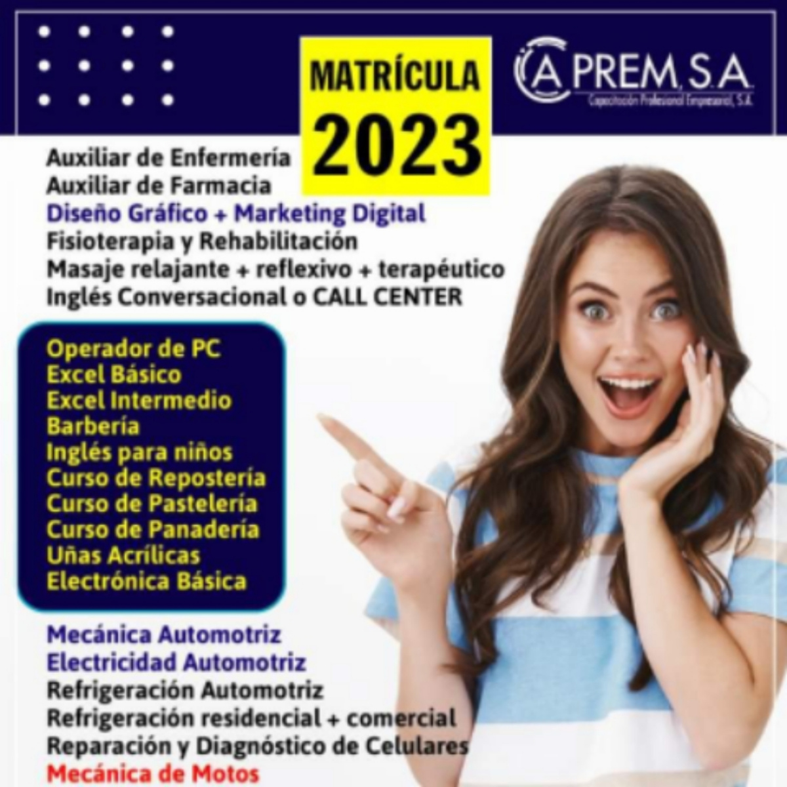

La Terapia Neural, tiene como objetivo el tratamiento y curacion de muchas patologías mediante la activación del sistema simpático a través de la aplicación de anestésicos locales (Mepivacaina o Procaina) en forma de pápulas dérmicas en aquellas zonas que muestran especial sensibilidad al dolor.

TERAPIA NEURAL
CELULAS MADRES
La terapia con células madre, es también conocida como medicina regenerativa, ya que provoca la reparación y regeneracion de los tejidos disfuncionales o lesionados, mediante óel uso de células madre o sus derivados.
FISIOTERAPIA
La fisioterapia, ofrece tratamiento y rehabilitación de múltiples patologías, como la discapacidad fisica, el dolor agudo y cronico: por medio de terapias que incluyen ejercicio fisico, masaje terapeutico y el uso de otros agentes como la electricidad, ultrasonido, láser, agua, frio y calor.
PROMOCION CHEQUEO CRONICOS

PROMOCION GINECOLOGICA
PROMOCION ENF. INFECCIOSAS
PROMOCION PEDIATRICA
CONTACTANOS AQUI